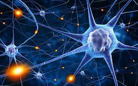

Neuroscience is the scientific study of the nervous system, incuding the brain, spinal cord and peripheral nerves.It encompasses a wide range of dicipline, including biology, psychology, and medicine. Understanding brain function is essential for unraveling the mysteries of human behavior, cognition, and emotion.
The human brain is an incredibly complex organ, consisting of approximately 86 billion neurons that communicate through trillions of synapses. It is responsible for our thoughts, emotions, memories, and movements, making it central to our existence. The brain is divided into various regions, each responsible for specific functions. For instance, the cerebrum, the largest part of the brain, is involved in higher cognitive functions such as reasoning, problem-solving, and decision-making. Meanwhile, the cerebellum plays a critical role in coordinating movement and balance, highlighting the intricate specialization within this remarkable organ.
Neuroplasticity refers to the brain's ability to adapt and reorganize itself in response to experiences, learning, and injury. This remarkable property allows the brain to form new neural connections throughout life, enabling recovery from trauma and adaptation to new environments.
Neuroplasticity is particularly prominent during childhood, a period when the brain is rapidly developing and learning new skills. However, recent research has shown that adults also retain significant plasticity, allowing them to continue learning and adapting well into old age.
Illustration of neuroplasticity in the brain
Mental health is a crucial aspect of overall well-being, affecting how we think, feel, and act. It also plays a signifi such as depression and anxiety, can impact anyone, regardless of age or background.
Maintaining good mental health is essential for a fulfilling life. Here are some key points about mental health: